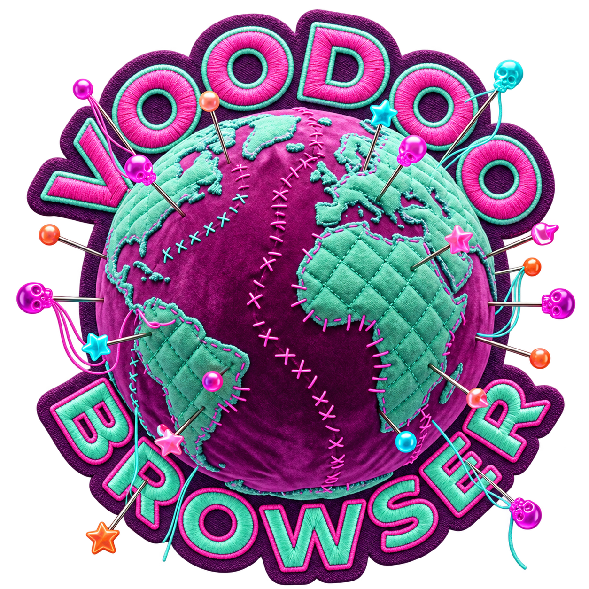

Voodoo browser
Workspaces
Drag to turn. Tap a pin to find its site.
Loading your pins…
Long-press a pin in the browser bar for options.

Drag to turn. Tap a pin to find its site.
Loading your pins…
Long-press a pin in the browser bar for options.